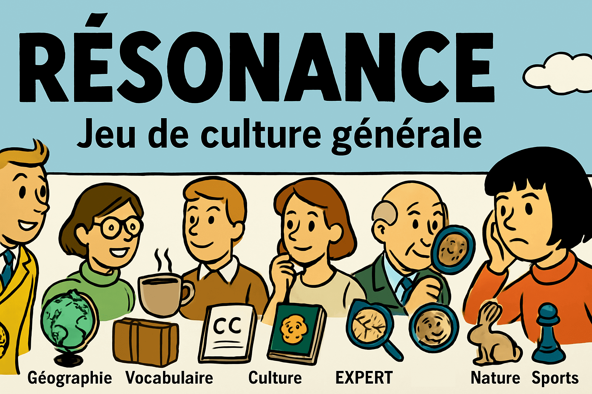

🏆 Top 5 des meilleures parties
Aucune partie jouée
Jouer !
Réinitialiser
Temps de jeu restant : 03:00
Nouveau Thème
0/0 thèmes joués
Statistiques de la Partie
Score total :
0
Meilleur score de thème :
0
Thèmes joués :
0
📈 Scores moyens par catégorie
Jouez quelques parties pour voir les scores par catégorie
📊 Distribution des scores
Jouez quelques parties pour voir la distribution
Historique